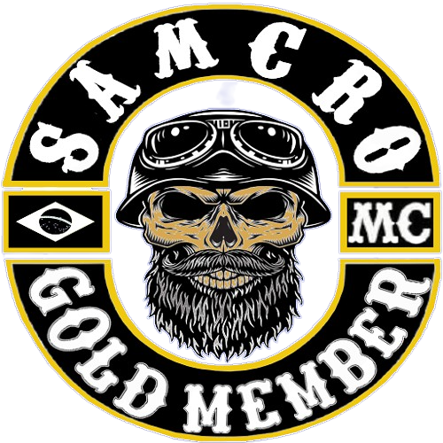
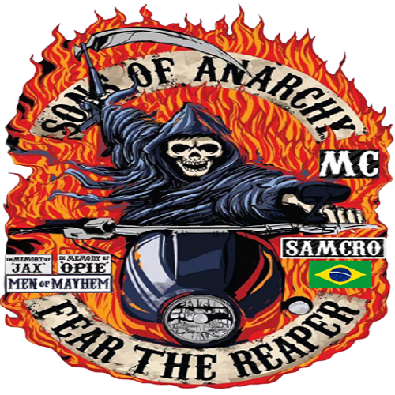
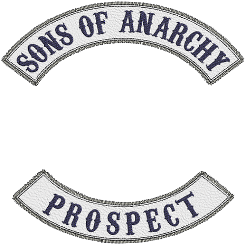
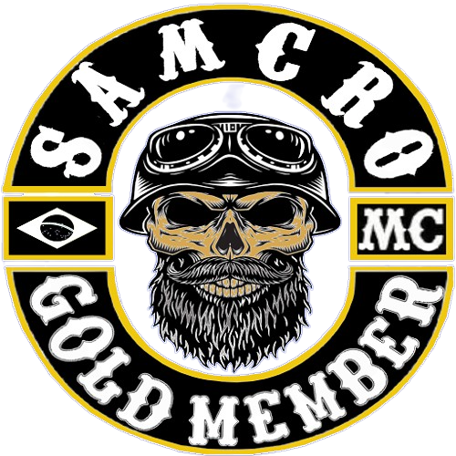
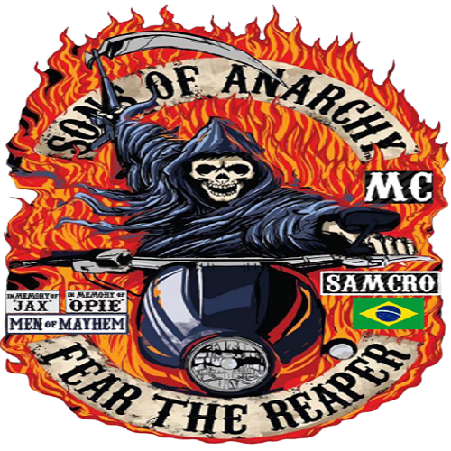
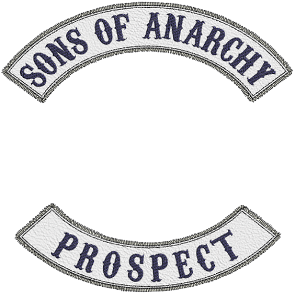

História
Não se sabe ao certo quando começou, mas foi no ano de 2020 que o clube alcançou o seu auge dentro da comunidade. Nesse periodo o mundo atravessava uma pandemia onde obrigou todos os seres humanos a ficarem dentro de casa para evitar uma contaminação e massa. Como valvula de espace, muitas pessoas começaram a jogar on-line como uma forma de se relacionar com outras pessoas e diminuir o exilio. Com os Sons Moto club Virtual não foi diferente, muitas pessoas ficaram sabendo do recrutamento pelas redes sociais como Facaebook e instagram e logo o clube alcançou dezenas de players pelo brasil.
Membros da Mesa (conselho diretor)
- Presidente
- Vice- Presidente
- Secretário
- Man of Mayen
- SGT.Armas
- Road Capitan
- Responsavél Pelos Fullpatch's
- Responsavél Pelos Prospect's
- Tesoureiro